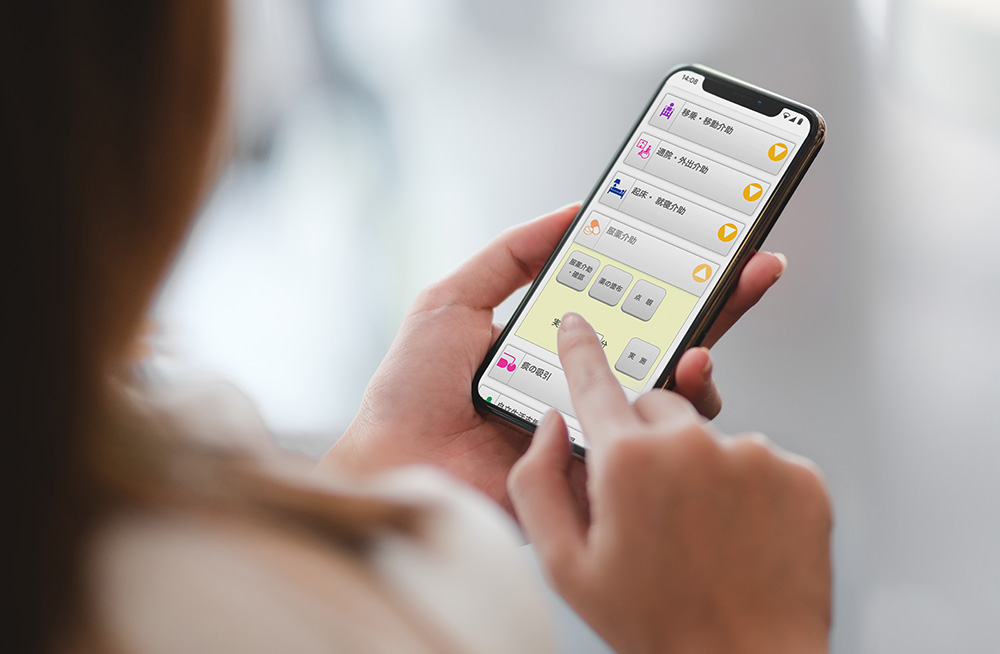
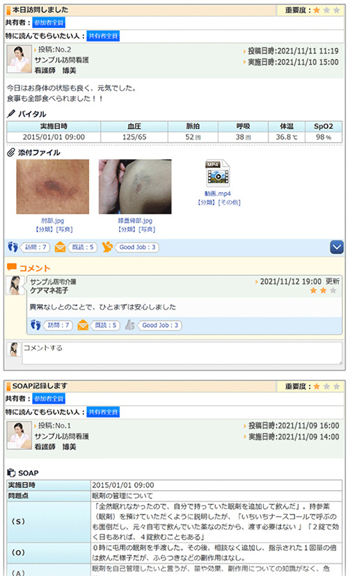

介護ソフト・地域包括ケア（医療介護連携システム）の カナミッククラウドサービス
今回は藤沢市内の地域で在宅サービスを展開されているココライフ株式会社 代表取締役の小野田誠様より、カナミッククラウドの特長である「訪問介護記録機能」や「多職種間連携機能」を、ユーザー視点からその導入効果についてお話を頂きました。
カナミッククラウドを導入した経緯
ココライフ株式会社は2015年に会社を設立し、居宅介護支援と訪問介護のサービスを提供しており、ヘルパー事業では介護保険サービスと障がい福祉サービスの両方を運営しております。2020年10月には訪問看護もスタートしました。設立当時は別の介護システム（介護ソフト）を使っていましたが、訪問看護の事業を始める時に、これら3つの事業をもっとシステム的に融合できるような形にしていきたいと考えたのが介護システム（介護ソフト）を見直すきっかけでした。
１）効率よく業務を行えるICTであること。
２）自社内の効率化だけでなく、多職種他法人と連携できること。
この2点を重要な評価ポイントとして検討した結果、多職種や地域での連携を重視した機能が充実している点や、藤沢市内での導入比率が高いことによる地域ネットワーク作りの可能性をメリットに感じカナミッククラウドの導入を決めました。
もうひとつ、この介護業界は今後もっと新しい方向に進んでいかなくてはと考えています。介護保険制度をリードしてきた政府の方針も新しい方向に進んでいく中、科学的介護「LIFE」への対応をはじめ「システムも変化していくべきである」という視点を持ち、そこに注力しているカナミックであれば、ユーザーとして長くお付き合いができると考えたのが導入を決めた理由のひとつです。
カナミッククラウドの利点や期待する機能
事業拡大を想定していたので、ライセンス数や端末台数、利用場所が制限されてしまうインストール型ではなく、場所を選ばずネットワーク越しに利用できるクラウド型のシステムが必要だと考えており、カナミックは豊富な実績から「使いやすさ」「安定性」「セキュリティ面」に期待できるのではないかと思いました。特に質の高いサービスを提供するためには、法人内外に関わらず多職種それぞれの情報を利活用できることが、非常に重要となってきます。その他、紙の記録や報告をなくすことで業務を効率化したいと考えていたので、ヘルパーや看護師が訪問先のご利用者宅でサービス提供後すぐに記録や報告ができるカナミックの介護記録機能にも期待していました。
カナミッククラウドの導入で得た効果
＜かんたん介護記録機能＞
特に効果が大きかった点は、紙の記録を全部やめてそれぞれのヘルパーに配布したスマートフォンから記録する運用にしたことです。シフトの確認や予定、ご利用者の住所や連絡先、ご自宅までの地図等もスマートフォンで全て確認できるので、現場のヘルパーがとても重宝しています。
カナミックの訪問介護記録機能は、非常に無駄が少なく作り込まれています。
サービス計画書の情報がヘルパーのスマートフォンに連動しており、サービス提供時にどのサービスを何分やるべきかが自動的に表示されます。ヘルパーはそれを見ながら記録できるので、やるべきサービスを適切な時間で進めることができます。時には計画に書かれていないサービスを実施しなければならず、提供時間が大きく変わる場合があります。そういった場合でも現場で画面を確認して、すぐに記録・報告できます。
＜多職種間連携機能＞

イメージ画像
システム内に「コミュニティ」というご利用者ごとの部屋を作ることにより、様々な情報を関係者間で共有できます。各ご利用者の日々の状態変化や、申し送り事項、服用する薬の種類なども共有できます。
外部の専門職と連携する時にも活用しています。訪問看護では訪問診療をされる医師や薬を届ける薬剤師の方たちとご利用者の情報を共有することが多いです。従来の方法はFAXの送受信による連携が主でしたが、カナミックを導入してからは他事業所も共有可能なコミュニティを作り、担当医師に確認したいことを弊社の看護師がコミュニティ上で連絡、システム内ですぐに返事をもらうことができるようになりました。薬剤師からは「新しく薬が変わったので、こういうことに注意してください。」という情報が共有されるので、他事業所との連携も広げられるようになってきています。
＜バックオフィス業務＞
ご利用者が増えていくにつれ、利用料金の請求と回収の管理も非常に煩雑になってきました。カナミックでは債権債務をきめ細かく管理する機能が豊富で、入金データから債権の自動消込や部分入金の管理など非常に効果があったと実感しています。